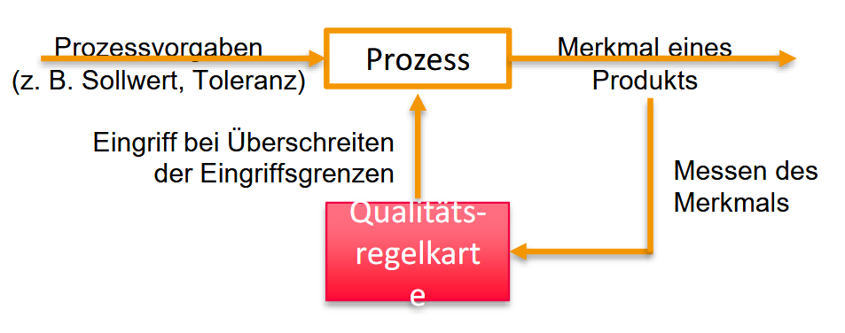
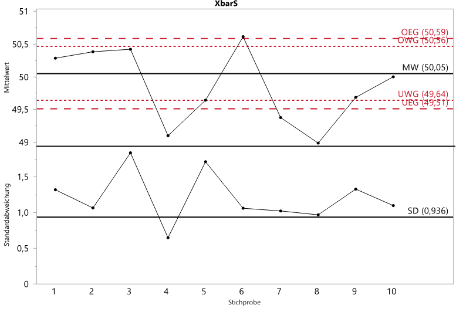
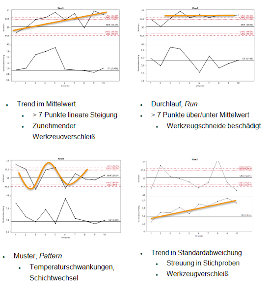
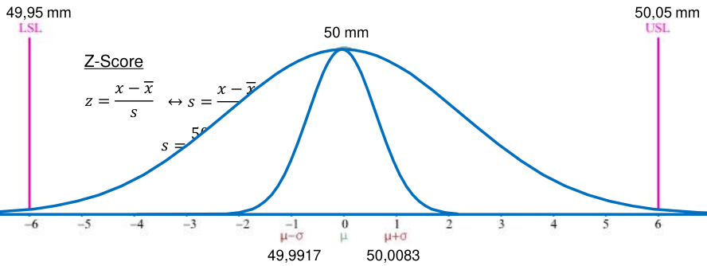

Statistische Qualitätskontrolle
Dient als Werkzeug zur statistischen Prozesslenkung (statistical process control, SPC)

Vorteile:
- Bewertung von zeitlicher Qualitätskonstanz (Prozesstabilität)
ggf. optimierung von Produktions- und Serviceprozessen - Einfache, graphische Bewertung von Prozessveränderungen
- Änderung der Lage der Streuung eines Prozessmerkmals
1 Regelkarten als Werkzeug
Es werden spezielle Diagramme, sogenannte Qualitätsregelkarten.
1.1 Aufbau XBarS-Karte

-> Mittelwert \bar{x} und Standartabweichung s
Eingriffsgrenzen mit \frac{1}{\sqrt{n}} als Standardfehler:
- Obere Warngrenze: \text{OWG} = \mu + 1.96\sigma\cdot\frac{1}{\sqrt{n}}
- Untere Warngrenze: \text{UWG} = \mu - 1.96\sigma\cdot\frac{1}{\sqrt{n}}
- Obere Eingriffsgrenze: \text{OEG} = \mu + 2.576\sigma\cdot\frac{1}{\sqrt{n}}
- Untere Eingriffsgrenze: \text{UEG} = \mu + 2.576\sigma\cdot\frac{1}{\sqrt{n}}
Für die Grenzen müssen der Faktor für \sigma und der Mittelwert \mu aus Vorkentnissen bekannt sein.
Es werden über die Zeit Stichproben entnommen und daraus dann der entsprechende Mittelwert \bar{x} sowie die Standardabweichung s berechnet und in die Karte eingetragen.
- Wenn die Werte ober oder unterhalb Warngrenzen liegen, besteht ein Verdacht auf Störung
-> Weitere Stichproben - Wenn die Werte ober oder unterhalb Eingreifsgrenzen liegen, gibt es vermutlich eine Störung
-> Sofortiger Eingriff erforderlich
Mögliche Schussfolgerungen aus einer XbarS-Karte:

1.2 Aufbau XbarR-Karte

-> Mittelwert \bar{x} und Spannweite R
2 Six Sigma
Ein statistisches Qualitätsziel (“Null Fehler”) als auch eine Managementmethode.
2.1 Ziel: Warum genau “6” Sigma?
Der Kampf gegen die Toleranzgrenze:
Es gibt einen Idealwert (z. B. eine Schraubenlänge von 50 mm) und Toleranzgrenzen, die erlaubt sind (z. B. ±0,05 mm).Die Gefahr:
Je breiter die Kurve (Standardabweichung σ) ist, desto größer ist das Risiko, dass Teile außerhalb der Toleranz liegen und damit Ausschuss sind.Die Lösung:
Prozess so präzise machen (die Kurve so schmal), dass der Mittelwert mindestens 6 Standardabweichungen (6σ) von der Toleranzgrenze entfernt ist.
-> Bei erreichen dieses Level würden 99,99966 % aller Teile innerhalb der Tolleranz liegen. Das würde praktisch eine “Nullfehlerproduktion” bedeuten.

2.2 Die Management-Methode DMAIC

Six Sigma ist nicht nur Mathe, sondern ein strukturierter Verbesserungsprozess, der ursprünglich von Motorola (1987) entwickelt und durch General Electric (Jack Welch) weltberühmt wurde.